October 1, 2026 on Luke’s Mac: isolated headless Chromium 151.0.7922.34, 1440 × 1000 viewport, production web build of PR head 49cc4322be8e99030c1dbf36650b1aa51aa444f1, real HTTP API and temporary SQLite. The validation follow-up adds a reproducible harness and evidence; no browser product code changed.
| Check | Result |
|---|---|
| Production web build | Passed |
| Light journeys | 5 passed |
| Dark journeys | 5 passed |
| Page errors | 0 |
| Simulated provider invocations | 8 total: 6 successful outcomes, 2 ambiguous outcomes |
| Invalid recipients / uncertain replay | No send POST for invalid input; replay kept same draft, revision and key, no additional provider invocation |
The compact toolbar glyphs overlap the top of the conflict notice in both appearances. Independent source comparison found the relevant styles and markup unchanged from the PR base. The recovery heading and choice buttons remain readable and the fixture clicks completed successfully. This cosmetic layout issue is a separate follow-up, not counted as fixed here.
bun install --frozen-lockfile bun run build bun apps/api/scripts/compose-fixture.ts # Keep that fixture alive. In another shell, using installed Playwright: node apps/web/scripts/compose-fixture-e2e.mjs /path/printed/connection.json /path/to/evidence # Optional installed-module / cached-browser paths: # ORCA_PLAYWRIGHT_MODULE=/absolute/path/to/playwright-core/index.mjs # ORCA_CHROMIUM_EXECUTABLE=/absolute/path/to/chrome-headless-shell
Start a fresh fixture for each run. The harness rejects non-loopback origins, creates new headless contexts rather than attaching to a user profile, blocks non-fixture browser requests, and never logs cookies or session tokens. Test cleanup deletes only its preserved synthetic original and clears only its isolated synthetic profile checkpoint before the independent uncertain-send case. Machine-readable results, request and synthetic payload ledger, limitations, and evidence hashes. Raw logs and original captures remain in the delegated Mac task’s evidence/browser/verified-run directory. Earlier failed harness attempts and disconnected fixture runs remain retained; they are not counted as passes. Waiting for hydration/checkpoints and resetting a stale synthetic recovery checkpoint corrected test assumptions. No concrete browser product defect was established by those failures.
Native results · Verification guide
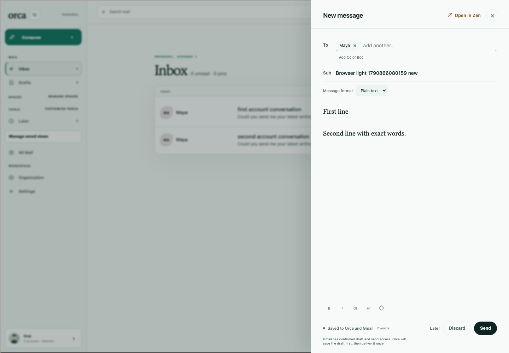
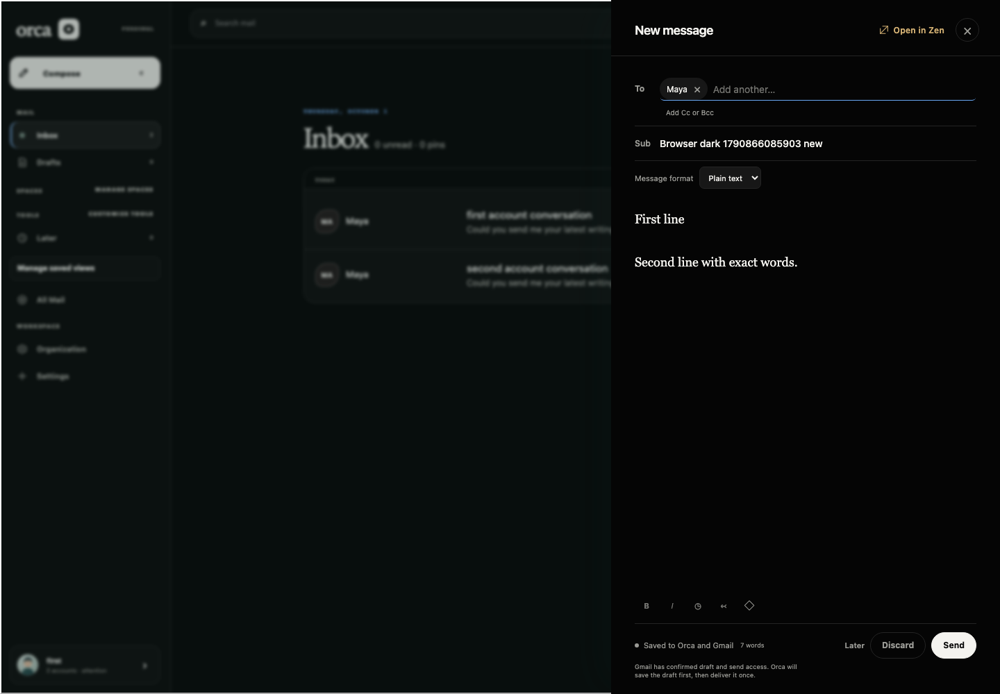
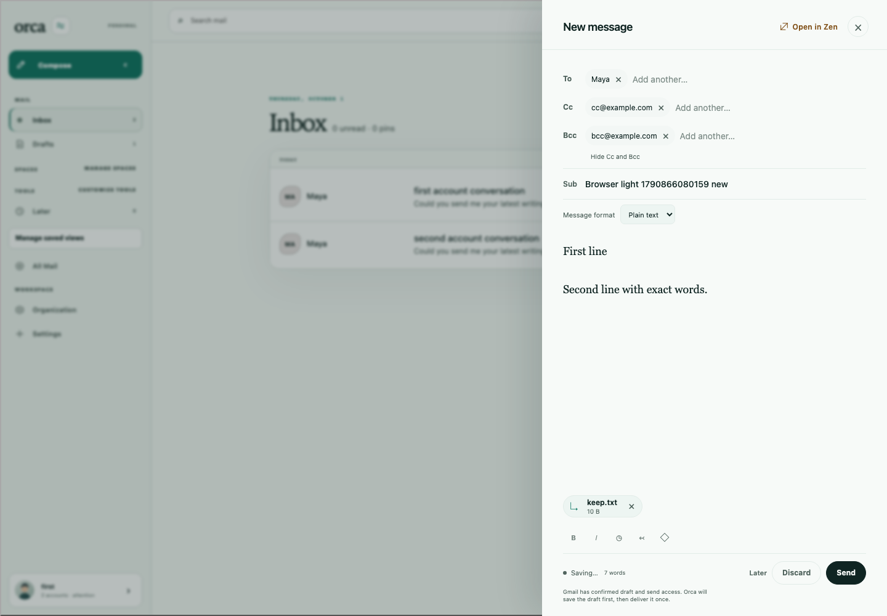
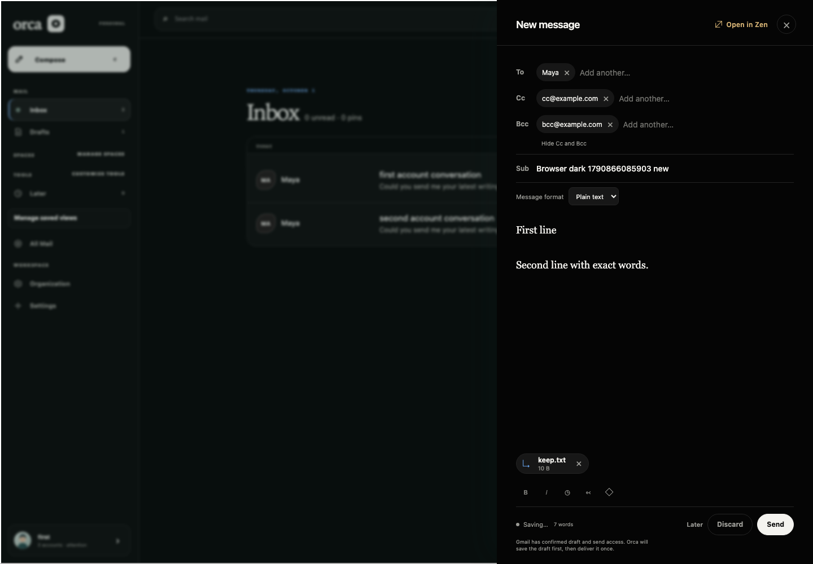
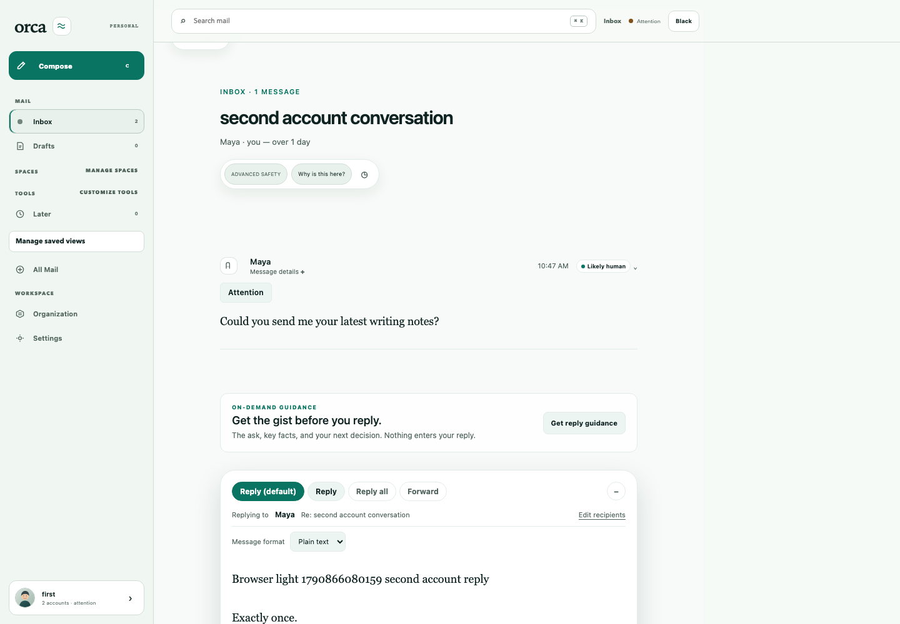
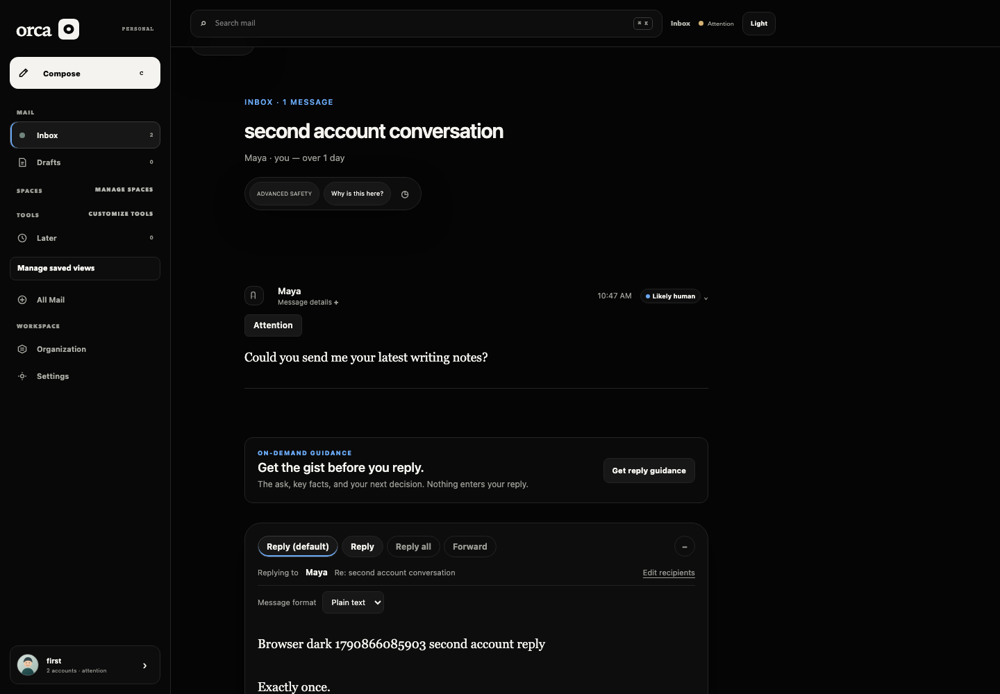
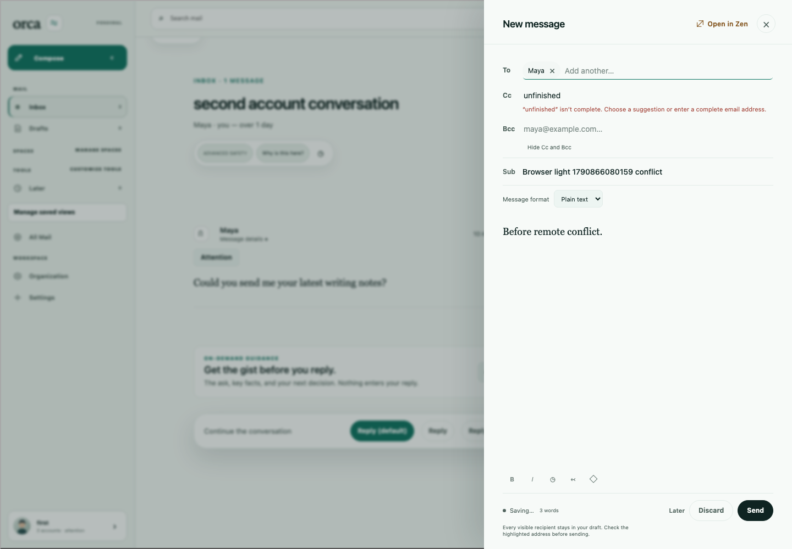
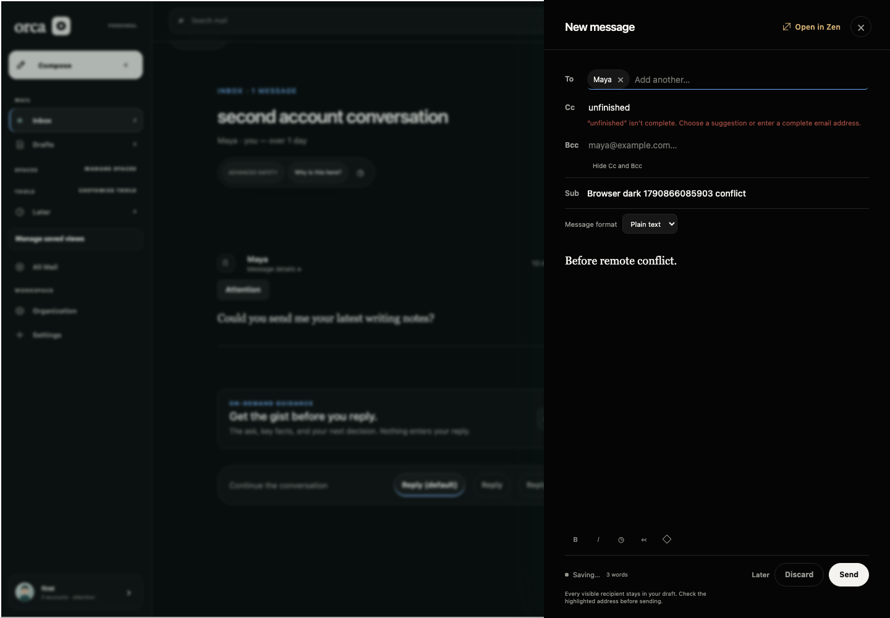
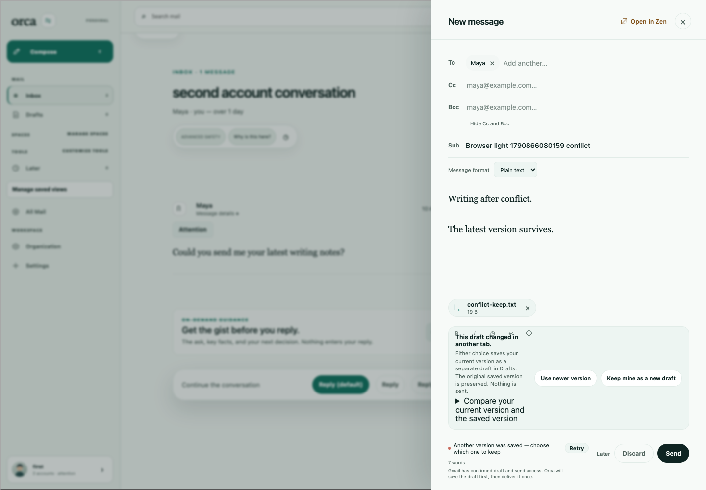
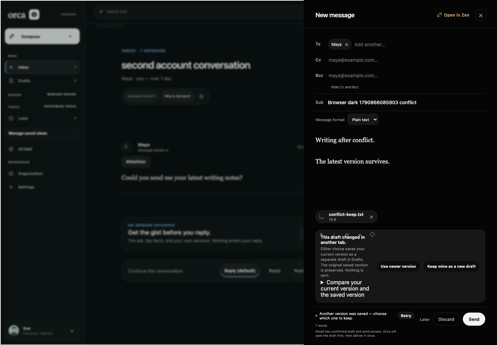
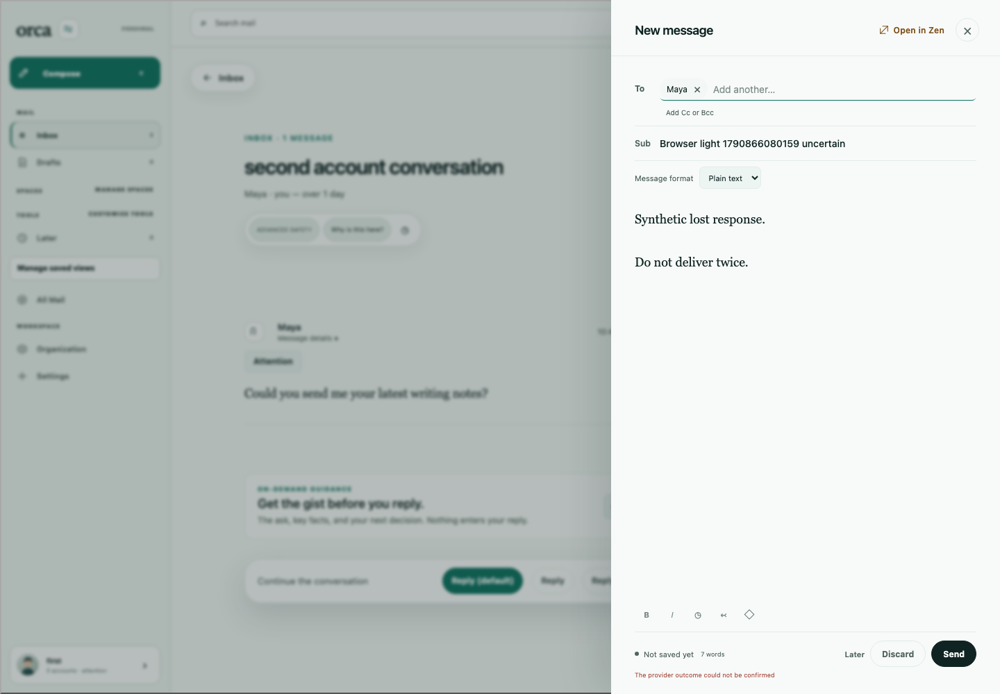
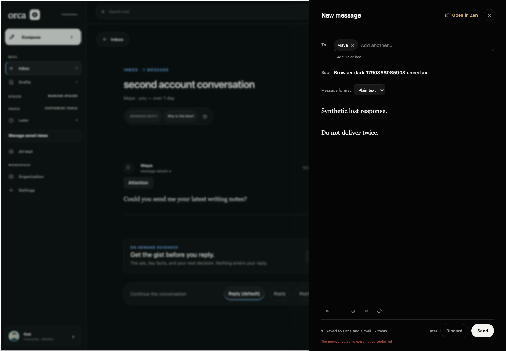